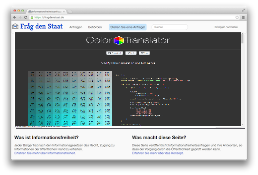

Javascript 3D satellite tracker library with up-to-date data from CELESTRAK. Satellite-database In-depth details on the 7,560 satellites

Modify colour saturation and luminance ©olor Translator

All the features you need. Switch them off in case you don't.
You need your users to send their name and keep it private? You get postal replies and need to redact PDFs? You are not allowed to publish documents and need to start a campaign? Froide has your back.

Integrate your community. Delegate tasks.
With the Django admin interface you control every single piece of data.
It comes with user roles and permissions so you only have to give your staff the access they need.